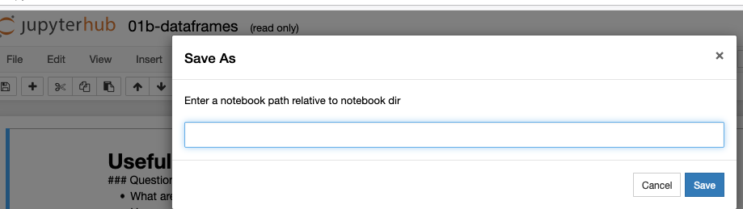

Setting up Jupyterhub on AWS as teaching backup
Instructor instructions - setting up Jupyterhub on AWS
This is an opinionated step-by-step guide to setting up a very insecure instance of Jupyterhub on AWS.

The use case has been a long-standing dream of mine:
- If (when) learners' installations fail in the middle of a training session that uses the Jupyter notebook and Python (especially if it’s a custom environment AND you’re teaching online) you can immediately direct them to an interface that looks very similar to what they have been working on locally and they can continue as if nothing happened.
- Then, in the next break or after the session, you can work with them one-by-one to fix their local installations.
The instructions below guide you in:
- Setting up a (very insecure, but also very easy to set up/use) instance of The Littlest Jupyter Hub on AWS
- Uploading some data and jupyter notebooks that your students can see/use
- Configuring the same environment from a conda
environment.ymlfile for all of your students. - (A hacky) way of monitoring memory usage, so you can get a sense of what kind of a machine you’ll need in class.
They also describe a few gotchas.
The first steps are adapted from TLJH instuctions.
Get an EC2 instance
-
Select a Ubuntu Server 18.04 LTS (HVM), SSD Volume Type - ami- instance (the one maintained by Canonical as per the TLJH screenshots in the documentation)
-
Choose a t3.small node type for testing - it’s the smallest that supports TLJH. Note that this does not have a free tier, but running it for a few hours costs approximately $0.10 in my experience.
In theory, you are meant to be able to use a custom command to install TLJH in one go, and paste it into the user script box. Unfortunately, none of the flags have worked for me, and the installation script itself sometimes works and sometimes doesn’t - so I recommend doing this over the ssh after the instance has been created.
#!/bin/bash
# you can use this script if you want
# I describe a more reliable alternative below
curl -L https://tljh.jupyter.org/bootstrap.py \
| sudo python3 - \
--admin myusername --show-progress-page --plugin tljh-repo2docker # can also in theory use a requirements.txt file here
-
When selecting storage, request General Purpose SSD (gp2) for most workloads; according to TLJH Provisioned IOPS SSD (io1) is the highest-performant when performance is critical. I have only used gp2 so far.
-
[Only the first time you set up] After downloading the AWS
.pemfile, make sure tochmod 600it as otherwise you get a permissions error.
chmod 600 ~/Desktop/mypemkey.pem
Installing TLJH
sshinto the server via the Public IPv4 DNS provided in the instance details.ubuntuis the admin username for the root ubuntu user, and you’ll need root privileges for the below
ssh -i ~/Desktop/mypemkey.pem ubuntu@ec2-18-220-114-100.us-east-2.compute.amazonaws.com

- Install TLJH using the following command:
curl -L https://tljh.jupyter.org/bootstrap.py \
| sudo python3 - \
--admin myusername #--user-requirements-txt-url https://raw.githubusercontent.com/data-8/materials-sp18/master/requirements.txt
Getting the data and notebooks - do this BEFORE creating users or logging in as the admin user
Create a folder:
sudo mkdir -p /srv/
# you may need to chmod it but I can't figure out the optimal permissions
# sudo chmod 777 data
Option 1:
Open a terminal on your local machine, navigate to the directory where you have your data and any notebooks you want to share with your learners/students, and upload the data to the AWS machine with the following command:
sudo scp -r -i ~/Desktop/mypemkey.pem * ubuntu@ec2-3-141-195-91.us-east-2.compute.amazonaws.com:/srv/data/
Option 2:
I recommend using a public folder hosted on something like Dropbox or Google Drive. I used Cloudstor when I did this recently.
cd /srv/
sudo wget https://cloudstor.aarnet.edu.au/plus/s/myurllink/download
sudo apt-get install -y unzip
sudo unzip download
Then create a soft link to the data directory with the following command:
sudo ln -s /srv/myproject/data /etc/skel/data
sudo ln -s /srv/myproject/notebooks /etc/skel/notebooks
The notebooks and data should now be visible for any new user created.
This is adapted from these instructions
Getting the right python packages to work
We use the Anaconda package manager for our training, and share installation instructions using a conda environment.yml file. If you instead have a pip requirements.txt file, you could have used the --user-requirements-txt-url flag at the end of the TLJH install above to install all of the packages in one go.
To install from an Anaconda Environment file the easiest way is to modify the base conda environment for all users:
export PATH=/opt/tljh/user/bin:${PATH}
sudo -E conda env update -n base -f /srv/myproject/environment.yml
This is adapted from these instructions
At this point, I’d execute all of the notebooks and assess their performance. While Amazon does offer the CloudWatch Agent to collect metrics, I wanted a simpler solution that wasn’t quite as overwhelming to configure (IAM roles + wizards + …), and I knew that the key issues I expected my notebooks to have were memory limits. So I used the script below (running in the terminal in which I had ssh’ed to the instance) to gather memory usage information every 0.1 second of my notebooks executing, with the script running for up to an hour. I actually executed each of a series of notebooks, then renamed the quote file at the end of a notebook to notebookX.txt and repeated the script before executing the next notebook.
for i in `seq 0 36000`; do
echo `cat /proc/meminfo | grep Active: | sed 's/Active: //g'` >> usage.txt
sleep 0.1s
done
# kill the script after running a notebook
mv usage.txt notebook1.txt
# run command again; run notebook2
A bit hacky, but it works!
Adding users
The easiest way to add users is to log in via the Jupyterhub web interface as an admin user. To do this:
-
Launch the Jupyterhub by following the Public IPv4 address indicated for the EC2 instance, changing the
https:at the beginning of the url tohttp:. -
Ignoring the “unsecurity”" warnings, log in using the administrator login you configured when you ran the tljh installation command (
myusernamein my example above) and a random password (make sure to write this down) to see the Jupyterhub. -
Go to the
Control Panel -> Admininterface and click theAdd Usersbutton. -
Manually paste in a list of user names you’d like into the box.
This is based on these instructions
In-class notes/some limitations
-
Make sure to encourage your users to write down the passwords they set when they log into their Jupyterhub instance for the first time - they will need these to login again the next session of your course.
-
The notebooks and data will be visible to all users when they log in, BUT they will not be able to save changes/make edits to them (as the directory is read-only). To get around this, your users should save a copy of the notebook in their “root” directory, using the
Save notebookbutton (NOT theMake a copyoption - this will fail as a result of not having the right permissions).

This in turn may mean that the relative paths you were using in your scripts (assuming ./notebooks/ and ./data in the root of the folder) may no longer work, and you may need to help your students get around this.
If you’re writing any output/generating any figures to disk, your students will need to run the following in a cell to avoid errors (where USERNAME is the username they used to log in):
import os
os.chdir('/home/jupyter-USERNAME/')
Extensions and improvements
The above requires you to use one LARGE EC2 instance in class to host all of your learners on a single machine. There are risks with running out of resources!
- If you would like each learner to use their own machine instead, you can use Zero to JupyterHub with Kubernetes.
- If you would like to use a docker environment to provision everything instead, you can use repo2docker with the above setup (or see next bullet).
- If you would like to use a docker enviroment and are comfortable using an Ansible Playbook to have a much more secure, customised and overall more complex environment - the Plasma project is definitely the way to go.
I hope this post has been useful for you - please ask questions in the comments, or let me know if you’ve used this in your own teaching!